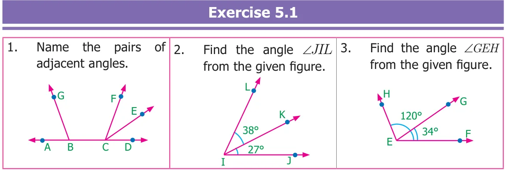
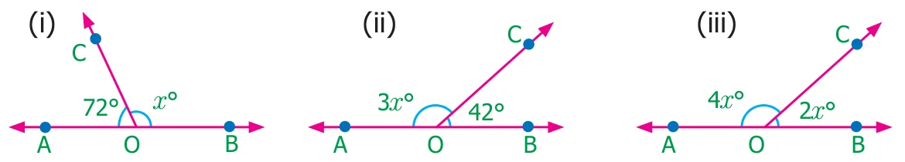
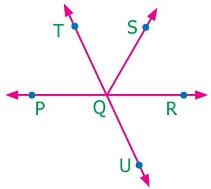
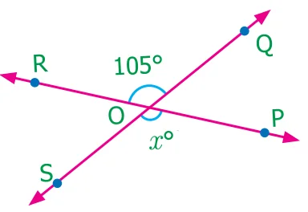
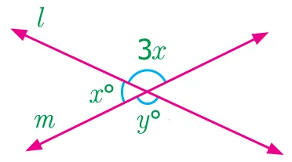
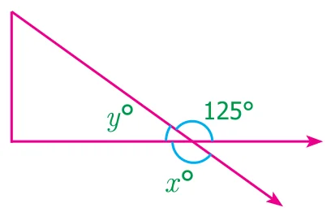
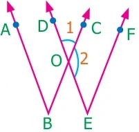
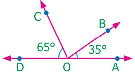

- Given that \(AB\) is a straight line. Calculate the value of \(x^{\circ}\) in the following cases.

- One angle of a linear pair is a right angle. What can you say about the other angle?
- If the three angles at a point are in the ratio 1 : 4 : 7, find the value of each angle?
- There are six angles at a point. One of them is \(45^{\circ}\) and the other five angles are all equal. What is the measure of all the five angles?
- In the given figure, identify

- any two pairs of adjacent angles.
- two pairs of vertically opposite angles.
- The angles at a point are \(x^{\circ}\), \(2x^{\circ}\), \(3x^{\circ}\), \(4x^{\circ}\) and \(5x^{\circ}\). Find the value of the largest angle?
- From the given figure, find the missing angle.

- Find the angles \(x^{\circ}\) and \(y^{\circ}\) in the figure shown.

- Using the figure, answer the following questions.

- What is the measure of angle \(x^{\circ}\)?
- What is the measure of angle \(y^{\circ}\)?
Objective type questions
- Adjacent angles have
- no common interior, no common arm, no common vertex
- one common vertex, one common arm, common interior
- one common arm, one common vertex, no common interior
- one common arm, no common vertex, no common interior
- In the given figure the angles \(\angle 1\) and \(\angle 2\) are

- opposite angles
- Adjacent angles
- Linear pair
- Supplementary angles
- Vertically opposite angles are
- not equal in measure
- complementary
- supplementary
- equal in measure
- The sum of all angles at a point is
- \(360^{\circ}\)
- \(180^{\circ}\)
- \(90^{\circ}\)
- \(0^{\circ}\)
- The measure of \(\angle BOC\) is

- \(90^{\circ}\)
- \(180^{\circ}\)
- \(80^{\circ}\)
- \(100^{\circ}\)